Lo que suena hoy
Canciones recomendadas
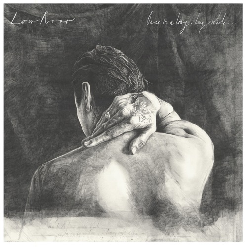
Bones
Low Roar
St. Eriksplan
Low Roar
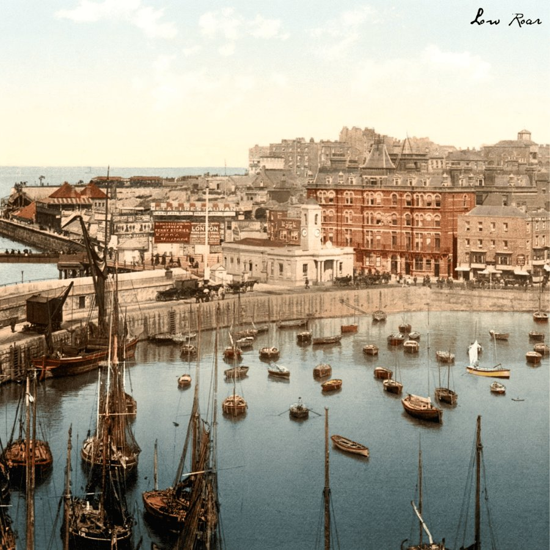
H.A.F.H
Low Roar
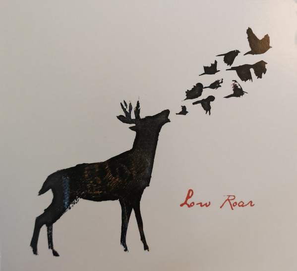
I'll Make You Feel
Low Roar
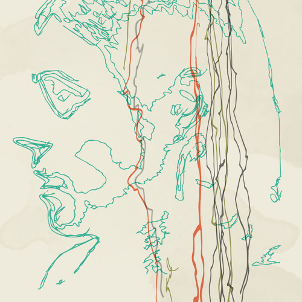
Vampire On My Fridge
Low Roar
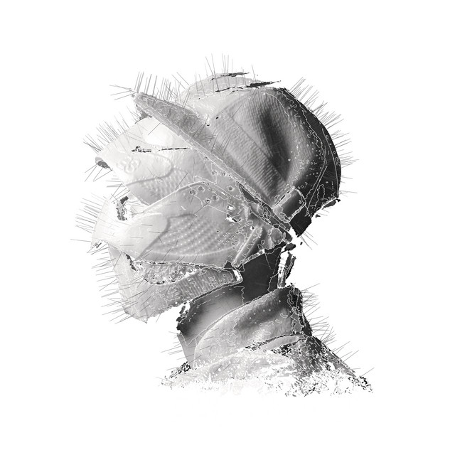
I Love You
Woodkid
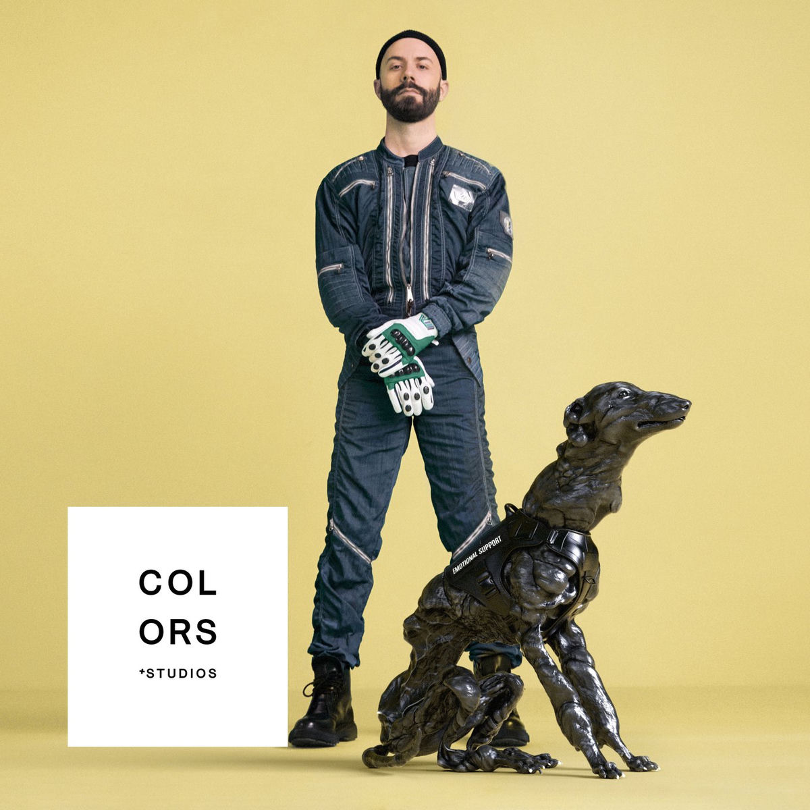
Pale Yellow
Woodkid
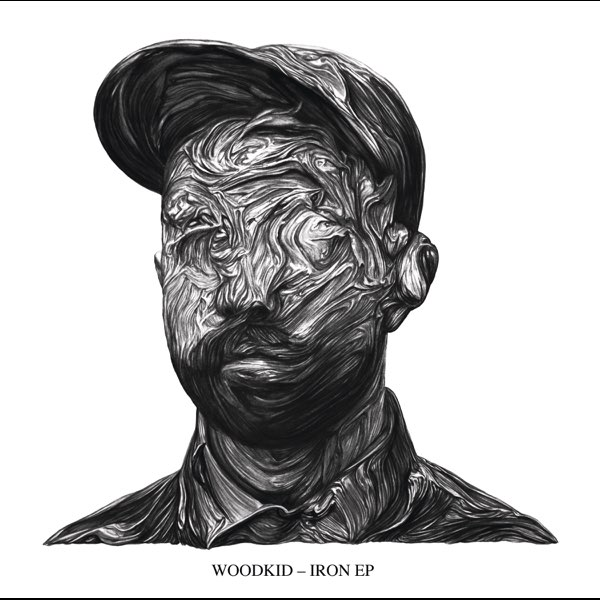
Baltimore's Fireflies
Woodkid
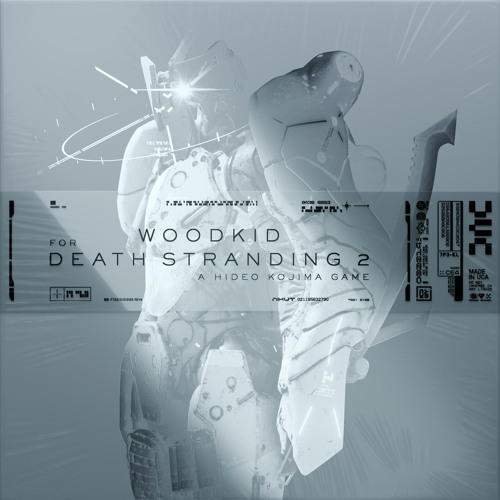
Any Love Of Any Kind
Woodkid
Run Boy Run
Woodkid
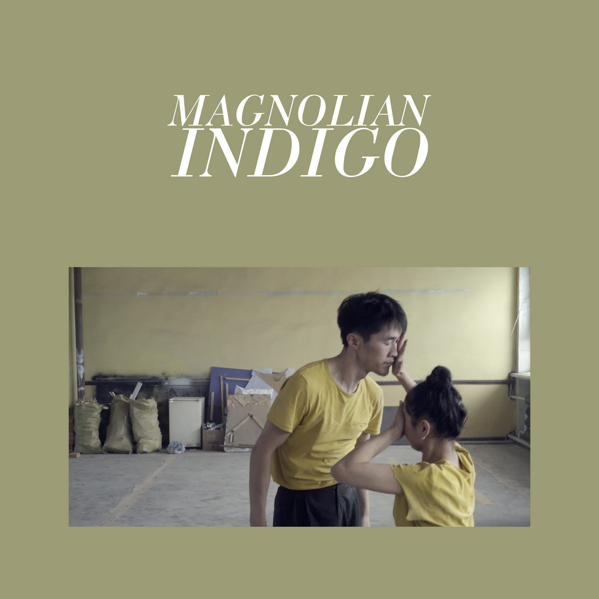
Indigo
Magnolian
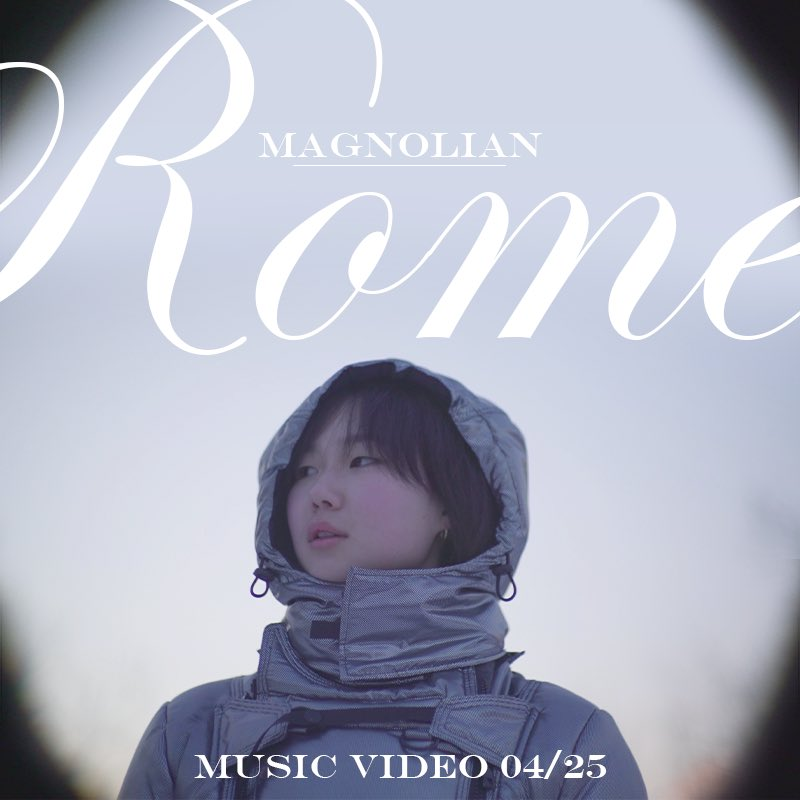
Rome
Magnolian
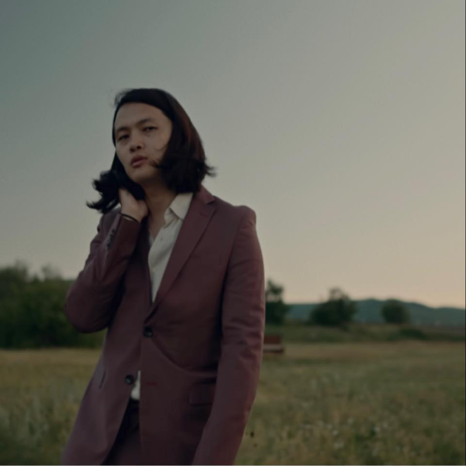
Geese
Magnolian
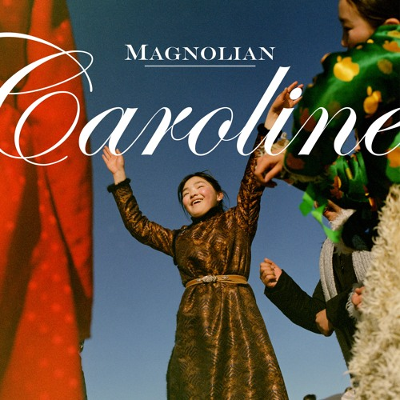
Caroline
Magnolian
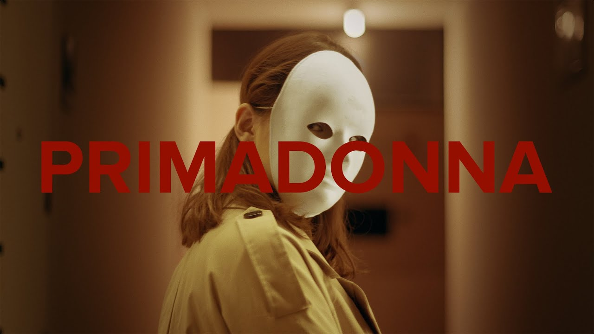
Primadonna
Magnolian

Mystery Of Love
Sufjan Stevens

Back To Oz
Sufjan Stevens
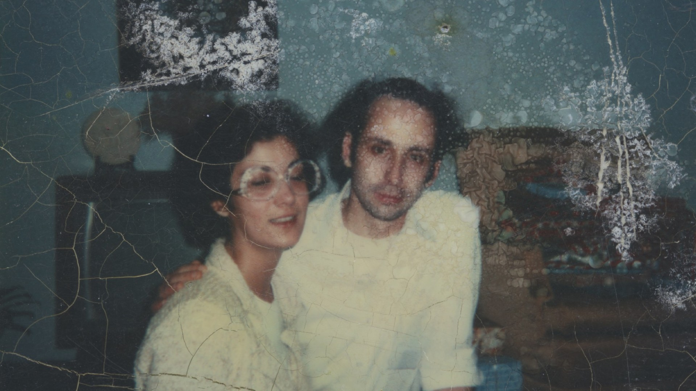
Should Have Known Better
Sufjan Stevens

My Red Little Fox
Sufjan Stevens
Fourth Of July
Sufjan Stevens